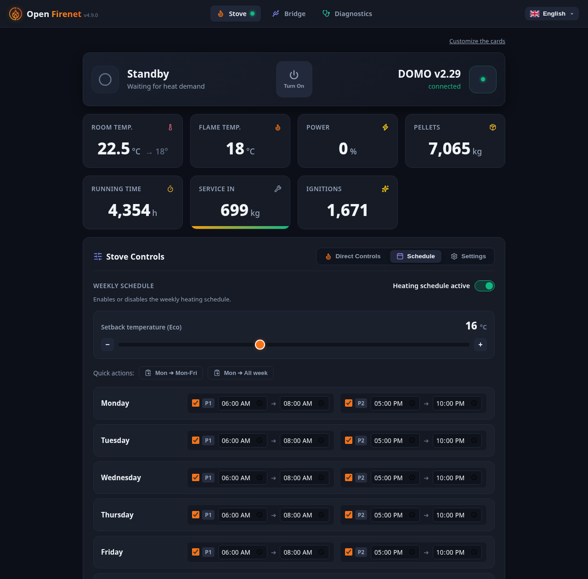

Pilotage local des poêles à granulés RIKA et ANIMO
Open Firenet remplace la clé RIKA Firenet ou ANIMO Wi-Fire par une carte ESP32-S3. Votre poêle dispose ainsi d'une page web locale, d'une API REST, de MQTT et d'une intégration Home Assistant. Aucun compte cloud, aucun accès à Internet nécessaire.

http://open-firenet.localFonctionnalités
Pilotage local sur votre réseau
Marche/arrêt, mode de fonctionnement, puissance de chauffe, température de consigne, programmation hebdomadaire, protection hors-gel et ventilateurs MultiAir pour les poêles équipés.
Toutes les données du poêle en direct
Températures, consommation de granulés, heures de fonctionnement, compte à rebours d'entretien, codes d'erreur et d'avertissement : jusqu'à 88 valeurs remontées sous leurs désignations RIKA d'origine.
S'intègre à votre domotique
Une intégration Home Assistant, une API REST, et MQTT pour Jeedom, openHAB, Node-RED, Domoticz et tout autre système domotique.
Fonctionnement 100 % local
La clé dialogue avec le poêle en USB et avec vous par votre Wi-Fi. Aucune donnée n'est envoyée à un serveur.
Un écran sur la clé
Avec la LilyGO T-Dongle-S3 ou l'ESP32-S3 Pocket Dongle, l'état du poêle et la température de la pièce s'affichent sur l'écran de la clé. Découvrir l'écran.

Les trois composants
Firmware
S'exécute sur l'ESP32-S3 branché au poêle. Fournit la page web et l'API.
Installeur
Application pour Windows, macOS et Linux : flashe la carte, configure le Wi-Fi, fait les mises à jour sans fil.
Home Assistant
Thermostat, ventilateurs, interrupteur de programmation, capteurs et diagnostics, installés via HACS.
Poêles compatibles
Ce qui compte, c'est la version de firmware de la carte mère du poêle, affichée dans le menu Info de l'écran du poêle. La clé la détecte toute seule.
| Firmware du poêle | État | Remarques |
|---|---|---|
| 2.30 | Compatible | Toutes les valeurs et tous les réglages, y compris le fonctionnement au bois (un seul retour pour l'instant) |
| 2.29 | Compatible | Toutes les valeurs et tous les réglages |
| 2.28 | Compatible | Toutes les valeurs et tous les réglages |
| 2.26 / 2.27 | Compatible | Toutes les valeurs et tous les réglages |
| 2.25 | Partiel | Prise en charge initiale : état, températures et réglages principaux, programmation avec une plage horaire par jour. L'allumage n'a pas encore été essayé |
| Antérieur à 2.25 | Non testé | Vos retours sont les bienvenus |
Tous les détails de compatibilité
Aperçu de l'interface
